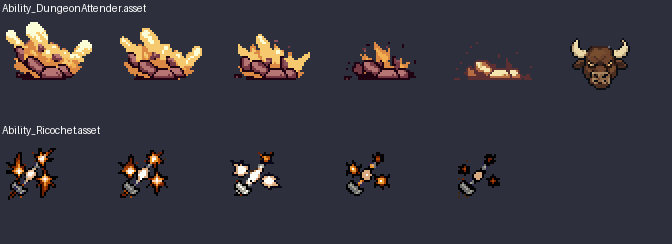

Cast motion audit
20 open findings across 465 reviewed controller bindings. Play a clip or step through its original Unity sprite keys.
No matching clips. Try another character, word or zone.
The earlier mace, axe and healing poses are under Before revisions. Compare the revised expansion artwork in the candidate review.
Production clip inventory
88 character definitions and two additional Grand Delver form controllers. Repeated drawings and short terminal keys count as authored exposures.
| Character | State and source | Cels | Length |
|---|
Scope, provenance and runtime effects
The source review used the five production zone rosters, all player definitions and the boss form overrides on selection-branch commit 8d06a814bda900d325a98ef463001f3b9339718c. The viewer follows each clip’s imported sprites, order and millisecond key intervals. Non-looping actions repeat here for inspection. In-game camera framing, actor transforms, scripted flashes, effects and input are separate.
Gideon Glass has four authored states behind a hidden player definition. Grand Delver’s pilot material is bound. The reserve controller is also assigned, with remount disabled in the current definition. Use the availability filter to inspect either group.
The Minotaur’s board movement uses one bull-face sprite. The Minotaur and Kobold board contacts each use five effect drawings at 40 ms per cel. Their reviewed artwork is shown below. These effects are recorded separately from the character bindings.
